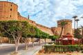
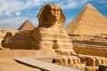

Multimédia
Nesta página encontra conteúdos multimédia.
Fotografias





Vídeo
Poesia
Cairo, cidade do Nilo e do sol,
onde o tempo se mede em pirâmides de pó.
As ruas sussurram histórias milenares,
entre mesquitas, bazares e mares.
Terra de faraós, de areia e de luz,
onde o passado e o presente se cruzam sem alarde.

O Cairo ao anoitecer
O Cairo em movimento
Uma cidade viva, entre tradição e modernidade.
Terra dos Faraós
Faça scroll
A imagem de fundo fica fixa enquanto o conteúdo se move — este é o efeito parallax.